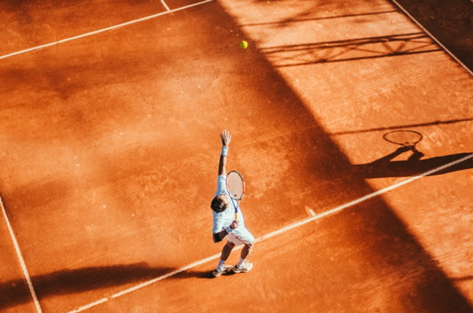
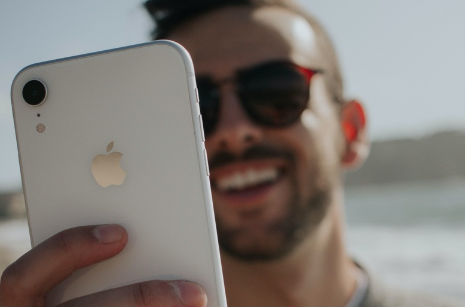
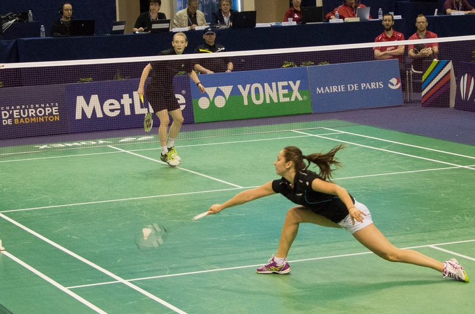
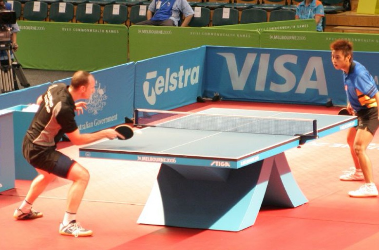
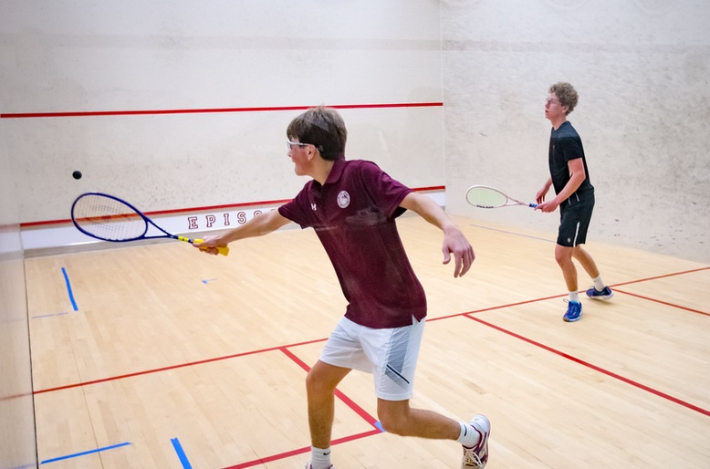
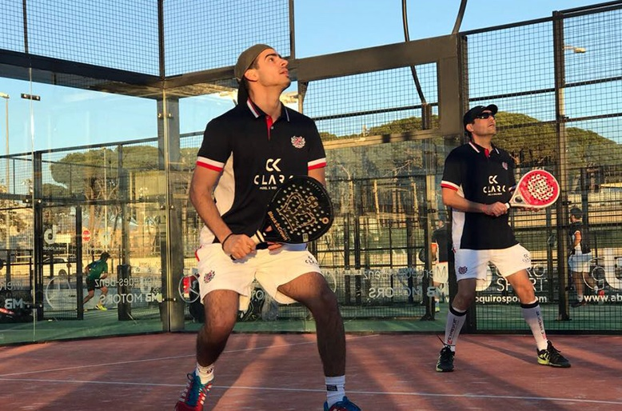
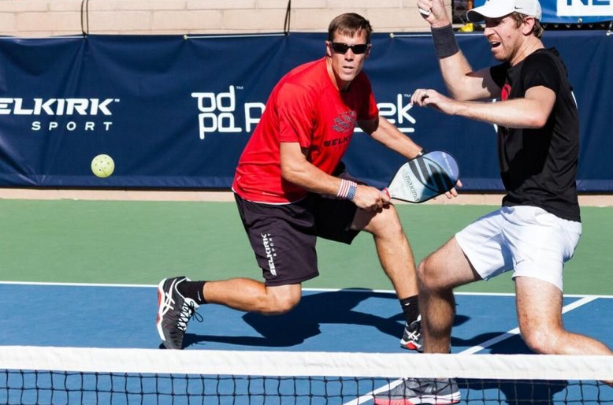
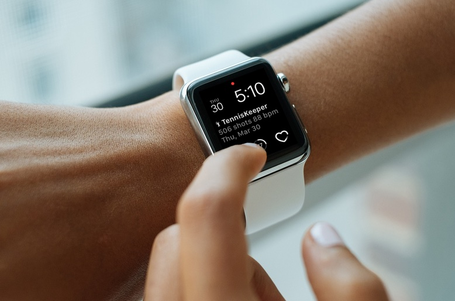
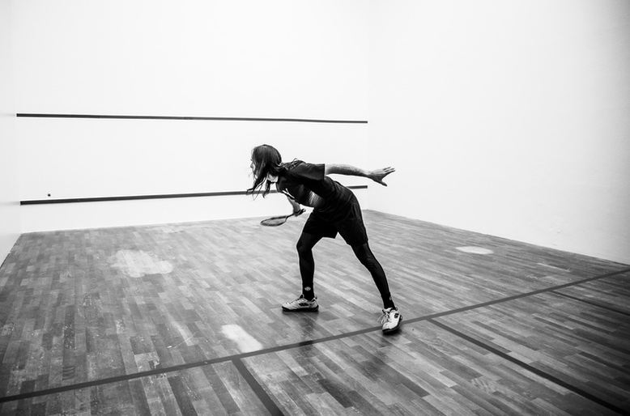

Racquet Sports Tracking means keeping a record of all your tennis, squash, badminton, racquetball, table tennis, padel and pickelball workouts. At first it might seem like a lot of extra work, but it is worth it. If you want to reach your full potential, you should be aware of what you are doing. The best way to do this is to record and track what you’re doing every time you play - simply log everything.
Here are the top 10 reasons why you should keep a playing log.
1. Gain Awareness of your Hitting Routine
It’s sometimes hard to train consistently on a busy schedule. At the end of the week, there’s usually not much time to reflect on what you did during the week if it wasn’t recorded anywhere. If you take the time to do it a few times, you’ll soon realize that you probably play less than you wanted to.
2. See Your Progress Against Different Opponents
Select any opponent, and see your Head to Head stats against them in matches, sets or games. See how close you are against certain opponents if you just win or lose by couple games.
3. Learn more about your own habits
Do you spend any time practicing or do you just play matches all the time? Are you more comfortable on your forehand than your backhand? Do you perform better on practice matches vs tournaments? If you log every outing, then you will quickly get a sense of what your workout regimen really looks like.
4. Experience aha Moments
On the days when you track your hit, you will experience multiple “aha moments”. TennisKeeper will notify you when you reach new milestones. For example, when you play the longest match by duration or by the number of games. You will never know unless you track it.
 Experience Multiple Aha Moments5. Know how much court time you are actually doing
How many hours were you on the court last month? If you don’t log it, it’s almost as if it didn’t count. When it’s logged in TennisKeeper – it’s there forever and you’ll have a historical reference of just how much you are playing on a weekly, monthly, and yearly basis. It’s amazing to have this information at your fingertips.
 If it is not logged, it is not counted.6. Discover the players you partner the best with
In doubles, how do you know which partner is the best for you? With TennisKeeper you can now find out objectively by analyzing how many matches you won or lost with a particular partner. Simply select a doubles partner, and TennisKeeper will show you all the matches you played with him or her. You can get a summary on the total wins, losses and ties together as a doubles team.
 Padel is played only in doubles - increase your odds of creating a winning doubles team7. Improve Your Footwork
Effective movement is critical to your success on the court. Proper footwork can help you cover more court, and prepare for the next return. Analyze your footwork and compare the steps you made. See how you are moving better over time and making more and more steps for small adjustments. This will enable you to get in the right position, stay balanced and hit the best possible shots.
8. Improve Your Swings
With your Apple Watch, you can analyze each swing shot. For each swing, see how you hit the ball and learn the science behind each swing. Do you have a clean contact? Is your swing smooth or jittery? Drill into your game patterns and see how your swing speed evolve over time.
 Analyze your Swings9. Formulate a Game Plan
How many matches have you lost that hinged on couple points or were decided by a tiebreaker? You have probably replayed the crucial points in your head countless times, wishing you had played them differently. Having a well-thought out game plan can make a huge impact. A one or two point swing is all you need to win these matches. By keeping track of your opponent's game style, strengths and weaknesses, you can formulate a game plan against them.
10. Makes you more accountable
If you want to improve your Tennis, Squash, Racquetball, Badminton, Table Tennis, Padel or Pickelball, then tracking will make you more accountable.If you consistently keep track of everything that you do, you might think twice the next time you skip a practice, or cut things short. It will also make you more motivated for each workout that you do.
Would you like to start tracking your racquet sports workouts? Download TennisKeeper for iPhone today!